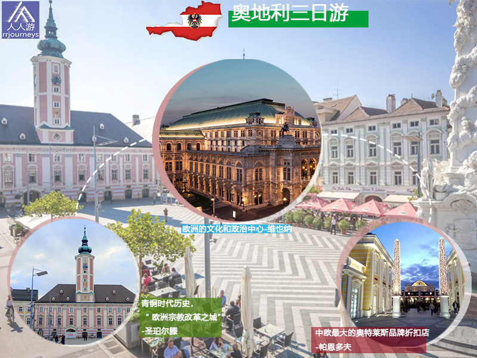
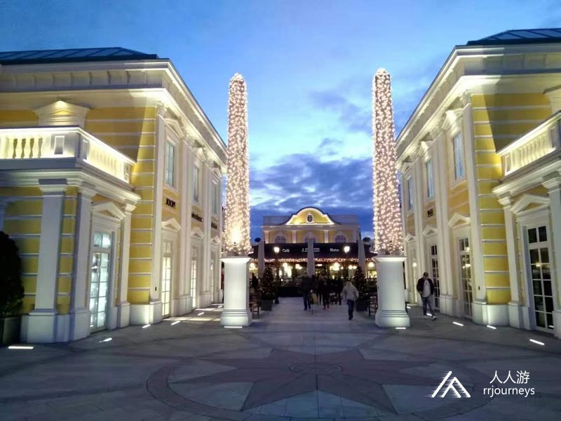

特色旅游
1日游
2-4日游
5-10日游
精品长线旅游
地址：匈牙利 布达佩斯 Budapest-Keleti, 1087
电话：0036-30-9574162
邮件：rrjourneys@gmail.com
网站：http://www.rrjourneys.com
【美景】
欧洲的文化和政治中心-维也纳 青铜时代历史，“ 欧洲宗教改革之城”-圣珀尔滕 中欧最大的奥特莱斯品牌折扣店-帕恩多夫

【美食】
奥地利
具体行程
DAY 1：布达佩斯—维也纳
入住地点：维也纳
DAY 2：维也纳—圣珀尔滕 入住地点：圣珀尔滕
DAY 3：圣珀尔滕—帕恩多夫
返回布达佩斯
帕恩多夫
帕恩多夫有4800名居民，位于布尔根兰州的新锡德尔湖区，罗马时代已经人烟稠密。罗马别墅布鲁克纳多夫就在今天的小镇以西几公里处，是奥地利东部最重要的别墅之一。 该地方的历史可追溯到于1264年。当时它被称为“ 秘鲁 ”。帕恩多夫属于威塞尔堡县。1529年维也纳第一次遭到土耳其围攻时，该镇成为入侵的受害者。之后由于土耳其的多次入侵和1945年的大火，该地方已经惨不忍睹了。
帕恩多夫的奥特莱斯购物中心位于帕恩多夫市中心以南约2.5公里的空地上，属于英国麦克阿瑟格伦集团，建于1997年，是奥地利第一个工厂直销中心，于1998年8月在当地商人的反对下开业，最初有30家商店。到2017年，已扩展到36,500平方米，160个品牌服装和名牌时装供应商。帕恩多夫名品奥特莱斯购物中心拥有1800名员工，是该地区最大的雇主之一。几乎一半的员工和大约三分之一的客户来自两个邻国匈牙利和斯洛伐克。

Austria: Here You Can Sense The Quality of Life
Vienna, Austria’s capital, lies in the country’s east on the Danube River. Its artistic and intellectual legacy was shaped by residents including Mozart, Beethoven and Sigmund Freud. The city is also known for its Imperial palaces, including Schönbrunn, the Habsburgs’ summer residence.
时间
地点
景点（可以 +/- ）
入住地点
第一天
布达佩斯出发243公里
维也纳
Vienna
霍夫堡, Schönbrunn Palace, 斯蒂芬主教座堂, 维也纳国立歌剧院, 美景宫, 米歇尔广场
第二天
66公里
圣珀尔滕
Sankt Pölten
Lower Austria Museum, Diözesanmuseum St. Pölten, Stadtmuseum St. Pölten, Klangturm, Franz Schubert-Brunnen
第三天
119公里
200公里到布达佩斯
Parndorf
Schloss Rohrau, Harrachpark, Haydn's birthplace, Schul Park, Parndorf Outlet
-
6天5夜乌克兰小众深度游
7天6夜克罗地亚、波黑小众
5天4夜波兰、斯洛伐克小众
四天三夜奥地利、斯洛文尼亚
匈牙利最大的滑雪场一日游
6天5夜，奥地利滑雪自由行
7天6夜，奥地利旅游滑雪自
4天3夜，奥地利滑雪自由行
Copyright 2020 www.rrjourneys.com
人人游 旅游官方网站 版权所有 All Rights Reserved